JavaScript - 101
2018. 03. 23
IT 개발2팀 UI파트 - 김재호
The Agenda
- JavaScript 소개
- JavaScript 시작
- 변수 (Variable)
- 배열 (Array)
- 객체 (Object)
- 함수 (Function)
- 유효범위 (Scope)
- 객체지향 프로그래밍 (OOP)
- jQuery
JavaScript 소개
JavaScript?

- HTML과 CSS는 정적인 언어
- JavaScript는 HTML과 CSS로 만들어진 웹페이지를 동적으로 변경해주는 언어
- HTML, CSS 기본적인 선행학습 필요
- 작성한 코드를 브라우저에서 바로 실행 가능
JavaScript의 역할
- HTML 엘리먼트 추가/삭제 및 CSS 스타일 변경
- 폼 유효성 검증
- 사용자와의 상호작용 (마우스, 키보드, 터치)
- 웹 브라우저 쿠키 설정/조회
- AJAX 이용한 웹 서버와 통신
과거 JavaScript는?
초창기 웹페이지의 보조적인 기능을 수행하기 위한 용도로 사용
- 1995년 브렌던 아이크(Brendan Eich) 넷스케이프 지원
모카 -> 라이브스크립트 -> 자바스크립트 - 국제 표준화 단체인 ECMA International에서 JavaScript 표준화 진행
- 크로스 브라우징, 보안 취약점 문제
- 전문적이지 못한 인식 (Copy & Paste)
JavaScript 환경 변화
- 데이터의 유형이 텍스트 -> 이미지 -> 미디어로 진화
- 과거에 서버에서 담당하던 역할들이 상당 부분 프론트 이동


- Ajax - 전체 페이지를 다시 렌더링하지 않고 변경되는 부분만 갱신
- jQuery - 보다 쉽게 DOM을 핸들링
- HTML5 - 마크업, JavaScript API를 강화
- NodeJS - 서버 개발 가능, 더 많은 개발자들이 자바스크립트 사용
- ECMAScript2015 (ES6) - 언어로서의 완성도가 높아짐
현재 자바스크립트는?
브라우저에서만 사용하는 용도를 벗어나 다양한 환경에서 폭넓게 활용

- MeanStack (Full Stack Javascript Framework)
- 클라이언트 / 서버 / 데이터베이스 모두 자바스크립트 기반 (JSON 형태로 통신)
- 모바일 앱(iOS & Android), 데스크탑 앱
SPA (Single Page Application)

- PC -> 모바일 사용자의 증가 (트래픽 감소와 속도, 사용성, 반응성 이슈)
- 프론트엔드 프레임워크의 강화 (React, Angular, Vue)
- 필요한 모든 정적 리소스를 최초에 한번 다운로드
- 페이지 이동없이 고속으로 화면 전환
- 네이티브 앱과 유사한 사용자 경험 제공
PWA (Progressive Web Apps)
최적화된 웹 성능에 모바일의 Native 기능을 결합한 최신 웹 앱
- 모바일 앱의 단점 (개발, 빌드, 배포, 검색 다운로드, 설치)
- 홈 화면 아이콘 추가, 오프라인 서비스, 푸시 알림 등 웹에서도 가능하게 하는 기술
(Service Worker)
JavaScript 시작
코드 작성 준비
- 아래 코드를 HTML head, body 태그 안에 작성
- script 태그의 src 속성을 사용하여 외부 js 파일 연결
index.html
<!-- internal -->
<script type="text/javascript">
//코드 작성
//한줄주석
/* 여러줄 주석 */
</script>
<!-- external -->
<script type="text/javascript" scr="js/ui/ui-base.js"></script>
script 태그 위치
index.html
<!DOCTYPE html>
<html>
<head>
<title>HTML Page</title>
//Bad
<script scr="js/lib/jquery-1.9.1.min.js"></script>
<script scr="js/ui/ui-base.js"></script>
</head>
<body>
...
//Good
//body 요소 안, 맨 마지막 위치
<script scr="js/lib/jquery-1.9.1.min.js"></script>
<script scr="js/ui/ui-base.js"></script>
</body>
</html>
script 태그 속성
<script src="script.js">

<script async src="script.js">

<script defer src="script.js">

변수 (Variable)
변수 선언
- 숫자로 시작 할 수 없음
- 대소문자 구별
- 이미 정의된 예약어 사용 안됨 (var, function, new, typeof..)
var number;
var str;
//한번에 선언 (콤마를 이용해 구분)
var number, str;
//숫자시작 X
var 1st = 10; //SyntaxError
//대소문자 구분, 완전히 다른변수
var value = 25;
var Value = 26;
//예약어 X
var function; //SyntaxError
변수의 중복 선언
변수의 중복 선언은 문법적으로 허용, 하지만 사용하지 않는 것이 좋음
var x = 1;
console.log(x); //1
//중복 선언
var x = 100;
console.log(x); //100
변수 선언 시 var 키워드 생략 허용
의도하지 않게 변수를 전역화할 수 있으므로 사용하지 않는 것이 좋음
x = 1;
console.log(x); //1
분산된 var 선언의 문제점
//예기치 않은 결과
function myFunction() {
console.log(foo); //① undefined
//Why no ReferenceError?
if(true) {
var foo = 123;
console.log(foo); //② 123
}
}
myFunction();
변수 호이스팅 (Hoisting)
코드를 해석하기 전 var 선언 범위를 상단으로 이동 합니다.
- 모든 변수 선언은 각 함수(스코프)의 가장 최상위로 끌어 올려짐
- 첫 줄 이후 선언된 변수들은 호이스팅으로 인해 선언한 곳 이전부터 존재
function myFunction() {
//var foo; -> 변수는 호이스트 되었습니다.
console.log(foo); //① undefined
if(true) {
var foo = 123;
console.log(foo); //② 123
}
}
myFunction();
자료형 (Data type)
- 기본 자료형 - Boolean, null, undefined, Number, String, Symbol
- 객체형 - Object (Function, Array, Date, RegExp)
- 동적 타입 언어, 느슨한 타입 언어
- 변수 선언 시 타입 정의 없음
- 값을 할당할 때 데이터 형이 결정되는 것이 특징
- 같은 변수에 여러 데이터 타입의 값을 대입 가능 (가능한 변경하지 않는다)
//값을 할당하지 않은 변수는 기본적으로 undefined
//자료형이 결정되지 않은 상태
var foo;
console.log(typeof foo); //undefined
//null은 개발자가 의도적으로 빈 값을 할당 (비어있는 변수)
var foo = 'Kim';
foo = null; //참조 정보가 제거됨
foo = 3;
console.log(typeof foo); //number
foo = 'Hi';
console.log(typeof foo); //string
foo = true;
console.log(typeof foo); //boolean
숫자를 다루다 보면 숫자 범위를 초과하거나 오류로 NaN
NaN (Not a Number) 숫자가 아니라는 뜻
네이밍 규칙
변수의 데이터 타입과 용도에 따라 접두사와 함께 붙여 사용 (헝가리안 표기법)
| 접두사 | 데이터 타입 | 예시 |
|---|---|---|
| a | Array | aUsers |
| s | String | sCompanyName |
| n | Number | nTotalCount |
| b | Boolean | bFlag, bActivation |
| o | Object | oController |
| ht | Hash Table | htUserInfo, htColorCode |
| d | Date | dToday, dCurrentTime |
| el | Html Element | elTableList |
| rx | Regular Expression | rxEmailFormat |
'==' vs '==='의 차이
- 동등 연산자 (==, !=) 값이 같으면 true (강제 형 변환 후 비교)
- 일치 연산자 (===, !==) 값이 같고 데이터 타입도 같아야만 true
- ==보다는 ===를 쓰는 것을 권장
0 == '' //true
0 == '0' //true
1 == true //true
null == undefined //true
0 === '' //false
0 === false //false
1 === true //false
null === undefined //false
배열 (Array)
배열 생성
여러 개의 데이터 값을 하나의 변수에 할당할 때 사용
var arr1 = []; //배열 리터럴 사용
var arr2 = new Array();
배열 요소 추가
- 필요한 index 위치에 값 할당 (순서에 맞게 값을 할당할 필요는 없음)
- 값이 할당되지 않은 index 요소의 값은 empty
- 배열의 길이(length)는 최종 index 기준으로 산정
//배열 요소에 index로 값 할당
var fruits = [];
fruits[0] = '사과';
fruits[1] = '배';
fruits[2] = '바나나';
//배열을 생성과 동시에 요소에 값 할당
var fruits = ['사과', '배', '바나나'];
var arr = [];
arr[0] = 'one';
arr[3] = 'three';
arr[7] = 'seven';
console.log(arr); //["one", empty × 2, "three", empty × 2, "seven"]
배열 요소 열거
배열 뒤 [ ]안에 index를 넣어 요소에 접근
var fruits = ["사과", "배", "바나나"];
console.log(fruits[0]); //사과
console.log(fruits[1]); //배
console.log(fruits[2]); //바나나
//요소 갯수 (배열 길이)
console.log(fruits.length); //3
//for문 사용
for (var i = 0; i < fruits.length; i++) {
console.log(i, fruits[i]); //0 사과, 1 배, 2 바나나
}
배열 메서드 (Array method)
- join– 문자열로 리턴 (원본 변경 X)
- reverse– 거꾸로 변경
- sort– 배열 정렬
- concat– 배열 이어 붙임 (원본 변경 X)
- slice– 부분 배열 반환 (원본 변경 X)
- splice– 삭제/추가
- push, pop– 맨뒤 추가/삭제
- shift, unshift– 맨앞 추가/삭제
객체 (Object)
자동차 객체
- 모든 자동차는 같은 속성을 가지고 있지만 그 값은 각각 다르고, 다양한 기능을 수행
- 현실세계의 객체를 프로그래밍적으로 접근하여 접목시킨 것을 객체라고 표현
| Object | Properties | Methods |
|---|---|---|
 |
car.name = 제네시스 | car.start() |
| car.model = G70 | car.stop() | |
| car.weight = 1,695kg | car.speedUp() | |
| car.color = white | car.slowDown() |
객체 생성
- 자바스크립트는 객체 기반 언어
- 기본자료형을 제외한 나머지 함수, 배열, 정규표현식 등 모두 객체
var obj1 = {}; //객체 리터럴 사용
var obj2 = new Object();
객체 속성 (Property)
- 객체는 Key(속성명), Value(값)로 구성
- 빈 객체를 생성하여 변수와 함수를 그 안에 추가
- 이때 선언된 변수를 '프로퍼티', 함수는 '메서드'
//객체 생성 후 프로퍼티를 추가
var car = {};
car.name = '제네시스';
car.model = 'G70';
car.weight = '1,695kg';
car.color = 'white';
//객체 생성과 동시에 프로퍼티를 추가
var car = {
name: '제네시스',
model: 'G70',
weight: '1,695kg',
color: 'white'
};
console.log(car.name); //제네시스
객체 메서드 (Method)
메서드 내부의 this는 해당 메소드를 호출한 객체에 바인딩
var car = {
name: '제네시스',
model: 'G70',
weight: '1,695kg',
getName: function() {
return this.name;
}
};
var car2 = {
name: 'BMW'
};
car2.getName = car.getName;
car.getName(); //this는 car, this.name -> 제네시스
car2.getName(); //this는 car2, this.name -> BMW
함수 (Function)
함수선언식 (Function declaration)
주로 반복적으로 사용되는 구문을 미리 작성해 두고 필요할 때 호출
function 함수이름(parameter1, parameter2,...) {
//code
}
function total(a, b) {
return a + b;
}
//함수 호출
total(10, 20); //30
함수표현식 (Function expression)
함수표현식으로 정의한 함수는 함수명 생략 가능
// 익명 함수표현식
var total = function(a, b) {
return a + b;
};
total(10, 20); //30
함수 호이스팅 (Function hoisting)
- 함수선언식 - 함수 선언의 위치와 상관없이 코드 내 어느 곳에서든지 호출 가능
- 함수표현식 - 호이스팅된 변수는 undefined로 초기화
- 함수선언식은 함수호출 전 반드시 선언하여야 한다는 규칙을 무시
코드의 구조를 엉성하게 만들 수 있어 함수표현식 사용권고
//함수선언에서의 호이스팅
foo(); //hello
function foo() {
console.log('hello');
}
//함수표현에서의 호이스팅
foo(); //TypeError: foo is not a function
var foo = function() {
console.log('hello');
};
즉시실행함수 (IIFE)
- 함수의 정의와 동시에 실행되는 함수
- 최초 한번만 호출되며 다시 호출할 수 없음
- 이러한 특징을 이용하여 초기화 처리에 사용, 글로벌 영역 오염방지
// 익명 즉시실행함수(immediately-invoked function expression)
(function () {
//code
}());
콜백 함수 (Callback function)
어떤 이벤트가 발생한 후 수행될 함수 (이벤트 핸들러 처리)
<button id="myButton">Click me</button>
<script>
var button = document.getElementById('myButton');
button.addEventListener('click', function() {
console.log('button clicked!');
});
</script>
유효범위 (Scope)
자바스크립트의 유효범위
- 전역 (Global scope) - 코드 어디에서든지 참조
- 지역 (Local scope or Function-level scope) - 정의된 함수 내에서만 참조
전역변수 (Global scope)
자바스크립트는 특별한 시작점이 없음
//Global scope
var global = 'global'; //전역변수
function foo() {
console.log(global);
}
foo(); //global
Non Block-level scope
var 선언된 변수는 Block-level scope를 사용하지 않으므로 x는 전역 변수
if (true) {
var x = 5; //전역변수
}
console.log(x); //5
지역변수 (Function-level scope)
- 함수 내에 선언된 변수, 매개변수(parameter)는 함수 외부에서 유효하지 않음
- 해당 함수 내에 정의된 중첩, 자식 함수를 비롯해 함수 내부에서만 사용 가능
function foo() {
//Local scope
var local = 'local'; //지역변수
console.log(local); //local
}
foo();
console.log(local); //ReferenceError: local is not defined
전역변수, 지역변수 동일한 이름 사용 시
- 변수명이 중복된 경우, 지역변수를 우선하여 참조 (각기 다른 변수객체가 생성)
- 혼란을 막기 위해 동일한 변수 네이밍은 가급적 사용하지 않는 것이 좋음
var global = 'global'; //전역변수
function foo() {
var global = 'local'; //지역변수
console.log(global); //local
}
foo();
console.log(global); //global
스코프 체인 (Scope chain)
변수를 찾을 때 스코프의 계층 구조에 기반한 스코프 체인을 거슬러 올라가며 추적
//각각의 변수들은 각기 다른 스코프에서 선언
//스코프 체인을 검색할 때 가장 처음 발견한 값을 반환
var number1 = 1;
function func1(){
var number2 = 2;
function func2(){
var number3 = 3;
console.log(number1 + number2 + number3); //6
}
func2();
}
func1();
클로저 (Closure)
- 내부함수는 외부함수의 지역변수에 접근 가능
- add()함수가 종료되더라도 내부변수 스코프 객체는 그대로 유지되는 클로저의 속성을 이용
- 클로저를 이용해 비공개 멤버(private) 생성
var add = function() {
var counter = 0; //counter는 외부에서 접근할 수 없는 비공개 멤버 (private)
return function() { //공개 멤버 (반환된 객체를 통해 외부에 공개)
return ++counter;
};
};
var foo = add(); //인스턴스 foo 생성
foo(); //1
foo(); //2
var bar = add(); //인스턴스 bar 생성 (새롭게 반환되는 인스턴스로 counter 초기화)
bar(); //1
bar(); //2
암묵적 전역
- foo() 함수 내 변수 x에 1을 할당
- foo() 함수 내에는 변수 x가 선언되어 있지 않음
- 따라서 상위 지역(전역)에서 변수 x를 찾고 존재하지 않으면
- 변수 x를 암묵적으로 전역변수로 선언
function foo() {
x = 1; //var keyword는 반드시 선언
var y = 2;
}
foo();
console.log(x); //1
변수명의 중복
파일이 분리되어 있어도 글로벌 스코프는 하나,
글로벌 스코프에 선언된 변수나 함수는 코드 내의 어디서든지 접근 가능
//x.js
function foo (){
// var i = 0;
i = 0;
}
//y.js
for(var i = 0; i < 5; i++){
foo();
console.log(i); //무한 루프 상태
}
<!DOCTYPE html>
<html>
<body>
<script scr="x.js"></script>
<script scr="y.js"></script>
</body>
</html>
Javascript의 문제점
전역변수 사용으로 인해 잠재적인 오류가 발생 할 수 있음
- 글로벌 스코프가 쉽게 오염
- 동일한 이름을 가진 변수 사용
- 올바른 의존성 순서
- 필요한 코드와 필요하지 않는 코드를 구분하는 것이 매우 어려운 일
최소한의 전역변수 사용
다음과 같이 전역변수 객체 하나를 만들어 사용
if(typeof MYAPP === 'undefined') {
var MYAPP = {};
}
//OR
var MYAPP = MYAPP || {};
MYAPP.student = {
name: 'Kim',
gender: 'male'
};
console.log(MYAPP.student.name); //Kim
즉시실행함수 전역변수 사용 억제
- 즉시 실행 함수는 즉시 실행되고 그 후 전역에서 바로 사라짐
- 전역변수를 만들지 않으므로 라이브러리 등에 자주 사용
(function() {
var MYAPP = MYAPP || {};
MYAPP.student = {
name: 'Kim',
gender: 'male'
};
console.log(MYAPP.student.name);
//code...
}());
console.log(MYAPP.student.name); //ReferenceError: MYAPP is not defined
객체지향 프로그래밍 (OOP)
객체지향 자바스크립트
프로토타입 기반(prototype-based) 객체지향 언어
클래스기반 언어에 익숙한 프로그래머들은 이러한 프로토타입 기반의 특성으로 인해 혼란
var Person = (function() {
//생성자 함수 Constructor
function Person(name) {
this._name = name;
}
//메서드
//sayHi()함수를 하나만 만들어
//객체의 인스턴스들이 재사용을 위해서 프로토타입 안에 정의
Person.prototype.sayHi = function () {
console.log('Hi! ' + this._name);
};
//return constructor
return Person;
}());
var me = new Person('Kim'); //new 연산자를 통해 인스턴스를 me 생성
me.sayHi(); //메서드 호출 Hi! Kim
var you = new Person('Lee'); //인스턴스 you 생성
you.sayHi(); //Hi! Lee
JavaScript 프로토타입 (Prototype)
기본 자료형 (Boolean, null, undefined, Number, String)을 제외한 모든 값은 객체(Object)
자바스크립트의 모든 객체는 자신의 부모 역할을 하는 객체와 연결
부모 객체의 프로퍼티, 메소드를 상속받아 사용 가능
프로토타입은 자신이 다른 객체의 원형이 되는 객체
모든 객체의 프로토타입은 객체를 생성할 때 결정
- Object.prototype
- Array.prototype
- Function.prototype
Object.prototype
객체 리터럴 방식으로 생성된 객체의 경우 부모는 Object.prototype
Object.prototype은 자바스크립트 모든 객체의 최상위 부모
student 객체는 __proto__ ( [[Prototype]] )라는 숨겨진 내부 프로퍼티에
자신의 부모 객체인 Object.prototype을 연결(Link)
var student = {
name: 'Kim',
score: 90
};
console.log(student.valueOf()); //Object {name: "Kim", score: 90}
//hasOwnProperty(), valueOf(), toString() 등 마치 자신의 프로퍼티인 것처럼 상속받아 사용

Object.prototype

Array.prototye
배열의 부모역할을 하는 객체는 Array.prototype
모든 배열에 존재하는 length, push(), pop().. 등과 같은 메서드들은
Array.prototype 객체의 프로퍼티
var myArray = [];
console.log(myArray);

Array.prototye

Function.prototye
함수의 부모 객체는 Function.prototype
function sum(x, y) {
//...
}

Function.prototye
jQuery
- 자바스크립트의 생산성을 향상시켜주는 자바스크립트 라이브러리
- 자바스크립트 코드를 단순하게 유지하면서 크로스 브라우징 이슈를 보다 쉽게 처리
- HTML 문서(DOM) 탐색, 조작, 이벤트 핸들링, 애니메이션, Ajax
jQuery 사용 준비
index.html
<body>
//...
<script scr="js/lib/jquery-1.9.1.min.js"></script>
<script scr="js/app.js"></script>
</body>
app.js
$(document).ready(function(){
//DOM이 완전히 로드되기 전까지 대기하다가 로드가 완료되면 실행
});
//OR
$(function(){
// Do something...
});
셀렉터 (Selector)
- CSS 스타일의 Selector를 이용하여 요소를 선택
- 자바스크립트 DOM API보다 쉽고 강력하며 유연함
여러개의 요소 선택, li 요소를 선택하고 이 요소들의 텍스트를 일괄 변경
index.html
<ul id="navigation">
<li>신세계몰</li>
<li>이마트몰</li>
<li class="howdy">하우디</li>
</ul>
app.js
$(function(){
console.log($('li'));
// [li, li, li.howdy, prevObject: n.fn.init(1), context: document, selector: "li"]
$('li').text('SSG');
});
Pure JavaScript
app.js
var targets = document.getElementsByTagName('li');
for(var i = 0; i < targets.length; i++){
// text노드를 선택한 후, text를 변경
targets[i].firstChild.nodeValue = 'SSG';
}
Tag, ID, Class Selector
가능하면 ID selector를 사용
document.getElementById()를 사용하기 때문에 ID selector가 빠름
app.js
//Tag Selector
$('li');
//ID Selector
$('#container');
//Class Selector
$('.articles');
자식 선택자 (Child Selector)
- 자신의 1 level 상위에 속하는 요소를 부모 요소
- 1 level 하위에 속하는 요소를 자식 요소
index.html
<ul id="navigation">
<li>신세계몰</li>
<li>이마트몰
<ul id="obanjang">
<li>오반장</li>
</ul>
</li>
<li class="howdy">하우디</li>
</ul>
app.js
$('#navigation > li').text('SSG').css('color', 'red');
DOM 탐색(Traversing)
특정 id를 기준으로 자식 element 목록을 탐색할 때는 .find()를 사용
index.html
<ul id="navigation">
<li>신세계몰</li>
<li>이마트몰</li>
<li class="howdy">하우디</li>
</ul>
app.js
var elem1 = $('#navigation').find('li'); //Traversing
var elem2 = $('#navigation').find('.howdy');
DOM 조작(Manipulation)
DOM에 새로운 요소를 추가/삭제, 복사, 속성 변경
index.html
<div class="item">
<h3 class="name">미네랄 워터 생수</h3>
<button>가격보기</button>
</div>
app.js
//append() 새로운 요소 추가
var price = $('<span>할인적용가 2,520</span>');
$('.item').append(price);
//remove() 요소 제거
$('button').remove();
DOM에 콘텐츠를 삽입할 때, 위치를 지정
index.html
[before]
<div class="item">
[prepend]
<h3 class="name">미네랄 워터 생수</h3>
<button>가격보기</button>
[append]
</div>
[after]
app.js
$('.item').prepend(price); //선택 요소의 여는 태그 뒤
$('.item').append(price); //선택 요소의 닫는 태그 앞
$('.item').before(price); //선택 요소의 앞
$('.item').after(price); //선택 요소의 뒤
Event
이벤트를 바인딩하고 해당 이벤트가 발생했을 때 실행될 콜백 함수를 지정
index.html
<div class="item">
<h3 class="name">미네랄 워터 생수</h3>
<button>가격보기</button>
</div>
app.js
$('button').on('click', function (e) {
var price = $('<span>할인적용가 2,520</span>');
$('.item').append(price);
$('button').remove();
});
- 버튼 요소가 여러개 있을 경우, 모든 버튼요소 제거, 가격 변경
- 이벤트가 발생한 버튼만 제거, 가격이 표시 되도록 수정
app.js
//$(this)는 $(e.target)
//closest() 메서드는 가장 근접한 상위 요소를 반환
$('button').on('click', function (e) {
var price = $('<span>할인적용가 2,520</span>');
$(this).closest('.item').append(price);
$(this).remove();
});
jQuery 플러그인 (Plug-in)
기존 기능을 확장할 수 있게 도와주는 프로그램
자주 사용되는 기능들을 플러그인으로 제작해서 사용
어떤 플러그인 사용해야 할까요?
- 오픈소스의 중요 요소들 - 안정성, 충분한 문서 (기능 설명, 사용법 및 데모)
- Github fork 또는 star 수
- 적극적인 유지 관리, 브라우저 지원범위
- 외부 커뮤니티 (StackOverflow)에 그 플러그인에 대한 질문, 답
bxSlider 플러그인 적용
요구기능
- 좌우버튼 클릭으로 이전, 다음 슬라이드 보기
- 첫번째에서 이전 버튼 클릭 시 '처음 슬라이드 입니다.' 알림메세지 출력
- 마지막에서 다음 버튼 클릭 시 '마지막 슬라이드 입니다.' 알림메세지 출력
- 참고링크 - bxSlider
app.js